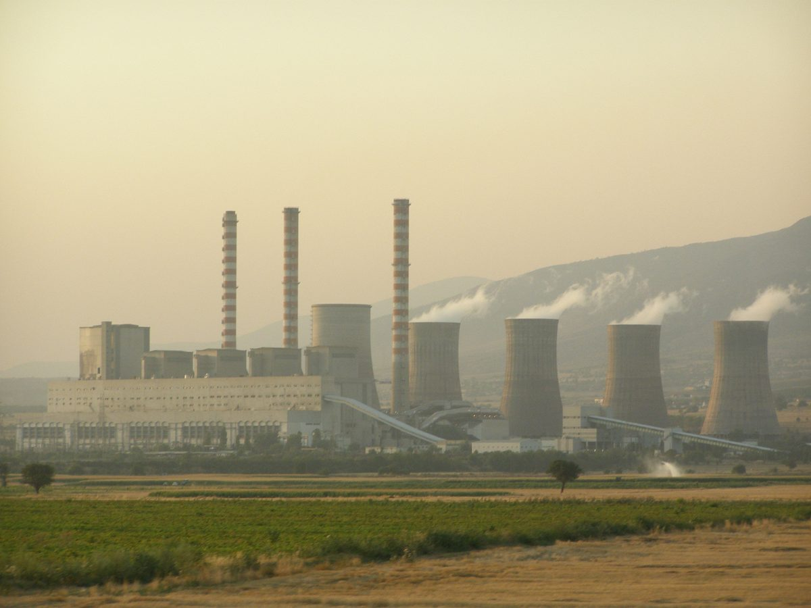

그리스 서마케도니아 도의회, 국영 전력사·아마존 데이터센터와 지역 발전 협약 협상단 꾸리기로…지역구 국회의원은 태양광 500MW 지역 몫 제안

도지사 안 찬성 17표로 통과, 협상 불가 조건부터 정하자는 야당 안은 8표…쿠쿨로풀로스 국회 부의장, 땅·물 내주는 대가로 500MW 짓게 해 도·시가 함께 지역 전력 공급 회사 만들자고 제안, 전기값 MWh당 50~60유로 주장
그리스 북부 서마케도니아 도의회가 30일 회의에서 국영 전력사 PPC(ΔΕΗ)와 아마존 등 대형 투자자를 상대로 '지역 발전 협약'을 협상할 작업단을 꾸리자는 요르고스 아마나티디스(Γιώργος Αμανατίδης) 도지사의 안을 찬성 17표로 통과시켰다. 작업단은 서마케도니아대학과 그리스 기술회의소(TEE), 전문 자문단이 조정을 맡으며, 도지사는 지역민 고용과 싼 전기 요구를 버리는 것이 아니라 작업단 협상의 핵심 의제로 다루겠다고 밝혔다. 소수 야당 대표 게오르기아 젬빌리아두(Γεωργία Ζεμπιλιάδου)는 지역민 채용과 싼 전기·디지털 서비스를 협상할 수 없는 조건으로 도의회가 먼저 못 박고, 투자 서류 전체가 나올 때까지 아기오스 디미트리오스 화력발전소의 되돌릴 수 없는 철거 절차를 멈추라고 요구했지만 이 안은 8표를 얻는 데 그쳤다. 회의에 나온 범그리스사회주의운동(PASOK) 소속 코자니 지역구 국회의원이자 국회 부의장인 파리스 쿠쿨로풀로스(Πάρις Κουκουλόπουλος)는 데이터센터와 그 전력을 댈 재생에너지에 지역 땅 수만 스트레마(1스트레마는 1,000㎡)가 들어가는 만큼, 그 대가로 서마케도니아 몫 태양광 500MW를 따로 짓게 하고 도와 시들이 함께 세우는 지역 전력 공급 회사가 이를 맡자고 제안했다. 그는 500MW면 지금 서마케도니아의 전력 소비 전부를 채울 수 있고 전기값도 지금의 절반 수준인 MWh당 50~60유로로 낮출 수 있다고 주장하며, 땅과 물을 가져가면서 지역 몫 500MW를 거절할 수는 없다고 말했다. 다만 500MW와 지역 전력 공급 회사는 의원의 제안일 뿐이며, 도의회가 이번에 의결한 것은 협상 작업단 구성이다.
시민에너지 관점
땅 수만 스트레마를 내주는 대가로 지역 소비 전부에 맞먹는 500MW를 지역 몫으로 요구하자는 제안은, 대형 시설이 들어설 때 지역이 받을 몫을 일자리 약속만이 아니라 발전 설비의 소유로 따지자는 문제 제기다. 같은 서마케도니아에서는 에너지공동체가 낸 태양광 연결 신청 800건 가운데 전력망에 들어간 것이 268건에 그쳤는데, 대형 사업에는 땅과 망이 열리고 공동체 사업은 줄을 서야 하는 구조라면 탈석탄 지역의 불신은 깊어질 수 있다. 투자 유치가 먼저이고 조건을 앞세우면 투자자가 떠난다는 반론이 나올 수 있지만, 지역이 소유한 발전소가 싼 전기를 대야 새 기업이 오고 사람이 남는다는 이 제안의 논리는 개발 이익을 지역의 자산으로 바꾸자는 요구와 맞닿아 있다. 국내에서도 데이터센터·산업단지에 대규모 재생에너지를 붙일 때 부지와 계통을 내주는 지역에 주민·지자체가 소유하는 발전 몫을 협약 조건으로 먼저 정해야 한다.
출처: Eordaialive.com 2026-10-31 eordaialive team(기자 미표기) 원문 보기
ギリシャ西マケドニア地方議会、国営電力会社・アマゾンのデータセンターと地域発展協定の交渉団を設置へ…地元選出の国会議員は太陽光500MWの地域枠を提案
知事案が賛成17票で可決、交渉できない条件を先に決めるべきだとする野党案は8票…ククロプロス国会副議長、土地と水を提供する見返りに500MWを建設させ、地方と市が共同で地域電力供給会社をつくるよう提案、電気料金はMWhあたり50～60ユーロと主張
ギリシャ北部の西マケドニア地方議会は30日の会議で、国営電力会社PPC（ΔΕΗ）やアマゾンなどの大手投資家を相手に「地域発展協定」を交渉する作業部会を設けるというヨルゴス・アマナティディス（Γιώργος Αμανατίδης）知事の案を賛成17票で可決した。作業部会は西マケドニア大学とギリシャ技術会議所（TEE）、専門の顧問団が調整役を担い、知事は地元雇用や安い電気の要求を捨てるのではなく、作業部会の交渉の中心議題として扱うと述べた。少数野党代表のゲオルギア・ゼンビリアドゥ（Γεωργία Ζεμπιλιάδου）氏は、地元住民の採用と安い電気・デジタルサービスを交渉の余地のない条件として議会が先に決め、投資の書類がすべて提出されるまでアギオス・ディミトリオス火力発電所の後戻りできない解体手続きを止めるよう求めたが、この案は8票にとどまった。会議に出席した全ギリシャ社会主義運動（PASOK）所属でコザニ選出の国会議員、国会副議長のパリス・ククロプロス（Πάρις Κουκουλόπουλος）氏は、データセンターとその電力を賄う再生可能エネルギーに地域の土地数万ストレマ（1ストレマは1,000㎡）が使われる以上、その見返りとして西マケドニア向けの太陽光500MWを別に建設させ、地方と市が共同で設立する地域電力供給会社がこれを担うべきだと提案した。同氏は、500MWあれば現在の西マケドニアの電力消費をすべて賄え、電気料金も今の半分程度のMWhあたり50～60ユーロに下げられると主張し、土地と水を持っていきながら地域向けの500MWを拒むことはできないと述べた。ただし500MWと地域電力供給会社は議員の提案にすぎず、地方議会が今回議決したのは交渉作業部会の設置である。
市民エネルギーの視点
数万ストレマの土地を提供する見返りに、地域の消費全体に匹敵する500MWを地域の取り分として求めようという提案は、大規模施設が来るときに地域が受け取るものを、雇用の約束だけでなく発電設備の所有で問おうという問題提起だ。同じ西マケドニアでは、エネルギー共同体が出した太陽光の系統接続申請800件のうち電力網に組み込まれたのは268件にとどまっており、大規模事業には土地と送電網が開かれ、共同体の事業は順番待ちを強いられる構造であれば、脱石炭地域の不信は深まりかねない。投資誘致が先で、条件を突きつければ投資家が去るという反論もありうるが、地域が所有する発電所が安い電気を供給してこそ新しい企業が来て人が残るというこの提案の論理は、開発利益を地域の資産に変えようという要求と通じている。韓国でも、データセンターや産業団地に大規模な再生可能エネルギーを併設する際には、用地と系統を提供する地域に、住民と自治体が所有する発電の枠を協定の条件として先に定めるべきだ。
出典: Eordaialive.com 2026-10-31 eordaialive team（記者名なし） 原文を読む
希腊西马其顿大区议会决定组建与国营电力公司及亚马逊数据中心谈判地方发展协议的工作组…当地国会议员提议为本地区保留500MW光伏
大区长方案以17票赞成通过，主张先定不可谈判条件的反对派方案获8票…国会副议长库库洛普洛斯提议以提供土地和水为代价建设500MW，由大区与各市共同成立地方供电公司，并称电价可降至每MWh 50～60欧元
希腊北部西马其顿大区议会30日开会，以17票赞成通过了大区长约尔戈斯·阿马纳季季斯（Γιώργος Αμανατίδης）的提案，组建工作组，与国营电力公司PPC（ΔΕΗ）以及亚马逊等大型投资者谈判“地方发展协议”。工作组由西马其顿大学、希腊技术协会（TEE）和专业顾问团负责协调；大区长表示，本地就业和廉价电力的诉求并未被放弃，而将作为工作组谈判的核心议题。少数反对派领袖格奥尔基娅·泽姆比利亚杜（Γεωργία Ζεμπιλιάδου）要求大区议会先把本地人优先录用和廉价电力、数字服务定为不可谈判的条件，并在全部投资文件公开之前停止阿吉奥斯季米特里奥斯火电厂不可逆的拆除程序，但该方案只获得8票。出席会议的泛希腊社会主义运动（PASOK）科扎尼选区国会议员、国会副议长帕里斯·库库洛普洛斯（Πάρις Κουκουλόπουλος）提出，数据中心及为其供电的可再生能源将占用当地数万斯特雷马（1斯特雷马为1,000㎡）土地，作为回报，应要求另建专供西马其顿的500MW光伏，并由大区与各市共同成立的地方供电公司来经营。他主张，500MW足以满足西马其顿目前的全部用电，电价也可降至现在一半左右、每MWh 50～60欧元，并表示拿走了土地和水，就不能拒绝给地方500MW。不过，500MW和地方供电公司只是这位议员的提议，大区议会此次表决通过的是组建谈判工作组。
市民能源视角
以提供数万斯特雷马土地为代价，要求一块相当于本地区全部用电的500MW作为地方份额，这一提议把大型设施进驻时地方应得的回报，从就业承诺进一步引向发电设施的所有权。在同一个西马其顿，能源社区提交的800宗光伏并网申请中只有268宗接入电网；如果大型项目能顺利拿到土地和电网，社区项目却只能排队，脱煤地区的不信任可能会加深。有人会说招商引资优先，提条件会把投资者吓跑，但该提议的逻辑是，只有地方所有的电站提供廉价电力，新企业才会来、人口才会留下，这与把开发收益转化为地方资产的诉求一脉相承。韩国在为数据中心、产业园区配套建设大规模可再生能源时，也应先把居民和地方政府拥有的发电份额写进协议条件，留给提供土地和电网容量的地区。
来源: Eordaialive.com 2026-10-31 eordaialive team（未署名） 查看原文
Western Macedonia regional council in Greece sets up team to negotiate local development pact with state utility and Amazon data centre; local MP proposes 500MW of solar reserved for the region
Governor's motion passes with 17 votes while opposition call to fix non-negotiable terms first gets 8; Deputy Speaker Koukoulopoulos proposes 500MW in return for land and water, run by a local power supplier set up jointly by the region and municipalities, and claims power could cost EUR 50 to 60 per MWh
The regional council of Western Macedonia in northern Greece voted 17 in favour on the 30th to adopt Governor Giorgos Amanatidis's proposal to form a working group that will negotiate a "local development pact" with state utility PPC (ΔΕΗ) and large investors such as Amazon. The University of Western Macedonia, the Technical Chamber of Greece (TEE) and specialist advisers will coordinate the group, and the governor said demands for local hiring and cheap electricity are not being dropped but will be the core of the group's negotiations. Minority opposition leader Georgia Zempiliadou called on the council to declare local hiring and cheap power and digital services non-negotiable from the outset, and to halt any irreversible demolition at the Agios Dimitrios power station until the full investment file is submitted, but her motion won only 8 votes. Paris Koukoulopoulos, PASOK MP for Kozani and Deputy Speaker of the Greek Parliament, who addressed the meeting, argued that because the data centre and the renewables needed to power it will take tens of thousands of stremmata (one stremma is 1,000㎡) of local land, the region should in return demand 500MW of solar built solely for Western Macedonia, to be run by a local power supplier set up jointly by the region and its municipalities. He claimed 500MW would cover all of Western Macedonia's current electricity consumption and bring prices down to about half today's level, EUR 50 to 60 per MWh, and said those taking the region's land and water cannot refuse it 500MW. The 500MW plan and the local supplier remain the MP's proposal; what the council approved was the formation of the negotiating team.
Citizen Energy View
The proposal to demand 500MW, roughly equal to the region's entire consumption, as a local share in return for tens of thousands of stremmata of land reframes what a region should get from a large facility, not only promises of jobs but ownership of generating capacity. In the same region, only 268 of 800 grid connection applications for energy community solar have made it onto the network, and if big projects find land and grid opened to them while community projects wait in line, distrust in a region leaving coal could deepen. Some will argue that investment must come first and that conditions will scare investors away, but the proposal's logic, that new companies will come and people will stay only if locally owned power plants supply cheap electricity, matches the demand to turn development gains into local assets. Korea, too, when large renewables are attached to data centres and industrial parks, should first write into the agreement a share of generation owned by residents and local governments in the areas that provide the land and grid capacity.
Source: Eordaialive.com 2026-10-31 eordaialive team (no byline) Read the original